의료전자기능사 (2011-07-31 기출문제)
1과목: 임의 구분
1. 신경세포와 신경세포가 만나 흥분을 전달하는 부위는?
- 축삭(axon)
- 연접(synapse)
- 신경세포(neuron)
- 칼슘채널(calcium channel)
(정답률: 72%)

2. 혈액의 가속과 감속, 심장밸브의 개폐 등으로 발생하는 심음은 몇 가지로 구성되어 있는가?
- 2개의 심음
- 3개의 심음
- 4개의 심음
- 5개의 심음
(정답률: 83%)
3. 우리 몸의 구성 기관계 중 심장, 혈관, 림프관, 림프절, 비장, 흉선, 편도 등으로 이루어지며 가스, 영양분, 노폐물 등의 운반과 림프구 및 항체의 생산을 주로 담당하는 것은?
- 신경계
- 순환계
- 소화계
- 호흡계
(정답률: 84%)
4. 다음 그림은 심전도를 나타낸 것이다. 가장 큰 진폭을 보이는 R파(그림에서 Ⓒ)가 발생하는 시점의 심장활동 상태는?
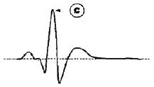
- 심실 이완
- 심방 수축
- 심실 수축
- 동방결절(SA node)에서 흥분 발생
(정답률: 75%)
5. 머리뼈와 관련된 해부학적 요소가 아닌 것은?
- 시상봉합 (sagittal suture)
- 벌집뼈 (ethmoid bone)
- 노뼈 (radius)
- 뒤통수뼈 (occipital bone)
(정답률: 70%)
6. 혈류측정에 관한 설명으로 틀린 것은?
- 혈액은 혈압이 높은 곳에서 낮은 곳으로 흐른다.
- 혈압의 원천은 심장이다.
- 단일 혈관을 대상으로 혈류를 측정하려면, 유속이나 유량을 측정하면 된다.
- 마이크로폰 방식이 있다.
(정답률: 73%)
7. 안구운동 측정법으로 옳지 않은 것은?
- 콘택트렌즈법
- 각막반사법
- 전자측정법
- 전류측정법
(정답률: 62%)
8. X-선 영상을 이용하여 혈관을 촬영하기 위한 방법은?
- X-선 조영술
- fMRI
- NIBP
- 도플러 영상법
(정답률: 77%)
9. 생체전기신호를 검출할 때 전원선 잡음을 제거하기위해 사용하는 방법으로 적합하지 않은 것은?
- 신호 평균화
- 인체의 접지
- 차동증폭기의 사용
- 전원선 주파수의 대역소거필터 사용
(정답률: 77%)
10. 전극을 통해 생체전기 현상을 기록할 수 있는 것이 아닌 것은?
- 뇌전도
- 심전도
- 심음도
- 근전도
(정답률: 77%)
11. 진단기기 중 단면 영상을 얻는데 사용되지 않는 기기는?
- 심전도 (ECG)
- 자기공명 영상장치 (MRI)
- 컴퓨터 단층 촬영장치 (CT)
- 초음파 영상장치
(정답률: 68%)
12. 생체 유량 계측 중 혈류의 측정에서 초음파 유량계의 한 종류인 펄스 도플러의 특징에 대한 설명으로 틀린 것은?
- 펄스 형태의 짧은 기간 동안 초음파 발사
- 혈류의 여러 층에서 반사되는 초음파 감지
- 혈류속도의 분포를 영상화
- 와류부분을 그래프로 표시하여 진단에 활용
(정답률: 59%)
13. 인체의 구성 조직 중 어깨, 골반, 늑골 등과 같이 넓적한 뼈를 가리키며, 신체의 연부조직을 보호하는 것을 뜻하는 근골격계 용어는?
- compact bone : 치밀뼈
- medullary cavity : 수강
- pneumatic bone : 공기뼈
- flat bond : 편평골
(정답률: 73%)
14. 체중 측정에 사용할 수 있는 센서는?
- 광다이오드
- 로드셀
- 열전대
- 금속전극
(정답률: 69%)
15. 아날로그 신호 처리와 관계없는 것은?
- 증폭
- 이산화
- 변조
- 복조
(정답률: 76%)
16. 혈압의 간접측정법에 대한 설명이 아닌 것은?
- 말단 부위에 압박주머니를 부착
- 서서히 압박주머니를 내리며 말단표면에서 청진
- 압박주머니 내압과 수축기 압력이 같아지며 와류에 의한 소리 발생
- 카테터에 스트레인 게이지 타입의 압력센서를 연결
(정답률: 70%)
17. 소화관 또는 소화기관, 소화샘에 속하지 않는 것은?
- 위(stomach)
- 콩팥(kidney)
- 간(liver)
- 췌장(pancreas)
(정답률: 78%)
18. 단위시간에 대한 기류의 량을 측정한 호흡유량을 적분한 값은?
- 호흡량
- 호흡수
- 잔류 폐용량
- 폐포내압
(정답률: 72%)
19. 수축기압이 120[mmHg], 확장기압이 90[mmHg]일 경우 맥압(purse pressure)은?
- 30[mmHg]
- 1⑤[mmHg]
- 120[mmHg]
- 210[mmHg]
(정답률: 67%)
20. 10백의 전압이득을 dB로 나타내면?
- 20[dB]
- -20[dB]
- 10[dB]
- -10[dB]
(정답률: 52%)
2과목: 임의 구분
21. 다음 중 도너(donor)로 사용될 수 있는 원소는?
- 탄소
- 인
- 붕소
- 납
(정답률: 59%)
22. 효소를 이용하여 용액 속에 들어 있는 소량의 물질을 감시하는 센서는?
- 저항센서
- 압전센서
- 유도성센서
- 바이오센서
(정답률: 65%)
23. 바깥지름을 d[mm], 리드를 L[mm], 리드각을 α라 할 때, 다음 중 옳은 관계식은?
- tanα=d/πL
- tanα=L/πd
- tanα=πd/L
- tanα=πL/d
(정답률: 69%)
24. 전자력의 방향을 알기 위한 법칙으로 검지 손가락을 자기장의 방향, 중지 손가락을 전류의 방향으로 향하게 하면 엄지손가락의 방향이 전류가 흐르는 도체에 작용하는 힘, 즉 전자력의 방향을 가리키며, 전동기의 원리를 나타내는 법칙은?
- 암페어의 오른나사 법칙
- 플레밍의 오른손 법칙
- 플레밍의 왼손 법칙
- 렌츠의 법칙
(정답률: 73%)
25. 접합전계효과 트랜지스터(J-FET)의 단자가 아닌 것은?
- 소스(source)
- 드레인(drain)
- 게이트(gate)
- 캐소드(cathode)
(정답률: 75%)
26. 나사에 관한 설명 중 옳은 것은?
- 나사산이 올라가면서 감겨지는 방향이 오른쪽이면 왼나사라고 하며, 일반적인 목적에 사용된다.
- 나사산이 올라가면서 감겨지는 방향이 오른쪽이면 왼나사라고 하며, 특수한 목적에 사용된다.
- 나사산이 올라가면서 감겨지는 방향이 왼쪽이면 왼나사라고 하며, 일반적인 목적에 사용된다.
- 나사산이 올라가면서 감겨지는 방향이 왼쪽이면 왼나사라고 하며, 특수한 목적에 사용된다.
(정답률: 57%)
27. 서미스터(thermistor) 소자는 주로 어떤 특성을 사용하는 것인가?
- 논리 제어특성
- 전압 증폭특성
- 전류 증폭특성
- 온도 특성
(정답률: 63%)
28. 다음과 같은 논리기호의 명칭은?
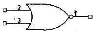
- XOR
- NOT
- AND
- NOR
(정답률: 61%)
29. 0.01[F]의 콘덴서에 100[V]의 전압을 가할 때 축적되는 전기량은?
- 0.5[C]
- 1[C]
- 2[C]
- 4[C]
(정답률: 66%)
30. 다음과 같은 진리표를 나타내는 게이트는?
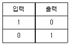
- NOR
- OR
- NOT
- AND
(정답률: 71%)
31. 미끄럼 베어링의 활동면에 따른 형식으로 적절히 않은 것은?
- 병행 활동면
- 타원 활동면
- 경사 활동면
- 원통 활동면
(정답률: 58%)
32. 트라이액에 대한 설명으로 옳은 것은?
- 전압제어 소자이다.
- 게이트 전류에 의해서 트리거 시킬 수 없다.
- 쌍방향성 소자이다.
- 게이트 전압에 따라 부하 전류의 값이 조절된다.
(정답률: 65%)
33. 압전센서가 사용되는 의료장치가 아닌 것은?
- 초음파 영상장치
- 심음도 측정장치
- 혈류 측정장치
- 체열 측정장치
(정답률: 58%)
34. 측정밥법 중 표준값을 이용하므로 간단하고 편리한 측정 방식은?
- 직접측정
- 간접측정
- 비교측정
- 절대측정
(정답률: 61%)
35. 다음 각종 소자 기호와 명칭이 옳게 연결된 것은?
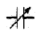
: 랜지스터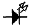
: LED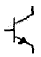
: 콘덴서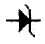
: 사이리스터
(정답률: 80%)
36. 도체에 흐르는 전류는 도체의 양 끝 사이에 가한 전압에 비례하고 도체의 저항에 반비례하는 관계를 무슨 법칙이라 하는가?
- 키르히호프의 법칙
- 쿨롱의 법칙
- 옴의 법칙
- 가우스의 법칙
(정답률: 77%)
37. 오실로스코프로 직접 측정할 수 없는 것은?
- 위산
- 전압
- 주파수
- 코일의 Q
(정답률: 76%)
38. 다음 불 대수를 간단히 한 결과식은?
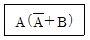
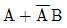
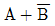
- A+B
- A∙B
(정답률: 66%)
39. 실제 실리콘 다이오드의 통상적인 전위장벽의 크기는?
- 0.1[V]
- 0.3[V]
- 0.7[V]
- 1[V]
(정답률: 71%)
40. 1비트의 정보를 저장할 수 있으며 메모리 소자로 사용이 가능한 것은?
- 멀티플렉서
- 전감산기
- 반가산기
- 플립플롭
(정답률: 73%)
3과목: 임의 구분
41. 인체의 대부분을 차지하는 물을 공명시키는 원리를 이용하고, 단면, 횡면, 사각 등 여러 면으로 검사하는 영상촬영장치는?
- X선 촬영장치
- CT(Computed Tomography)
- PACS(영상저장 전송시스템)
- MRI(Magnetic Resonance Image)
(정답률: 62%)
42. 인간의 인식, 판단, 추론, 문제 해결 능력, 학습기능과 같은 인간의 두뇌작용을 연구 대상으로 하는 학문분야는?
- 인공지능
- 전문가 시스템
- 데이터베이스
- 신경회로망
(정답률: 78%)
43. 다음 중 보조기억장치가 아닌 것은?
- RAM
- 플로피디스크
- 하드디스크
- 광디스크
(정답률: 68%)
44. 다음 중 의료법의 목적이 아닌 것은?
- 국민 의료에 관하여 필요한 사항 규정
- 국민이 수준높은 의료혜택을 받게 함
- 국민의 건강을 보호·증진
- 의료인의 권리와 사명을 규정
(정답률: 70%)
45. 반가산기의 출력 합 S와 캐리 C에 대한 논리식은?
- S=X⊕Y, C=XY
- S=XY, C=X+Y
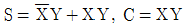
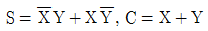
(정답률: 68%)
46. 혈액투석 장치의 요소가 아닌 것은?
- 투석기
- 항응고제
- 투석액
- 산화기
(정답률: 70%)
47. 의료기관의 필요한 인원 기준으로 틀린 것은?
- 의료기관에는 보건복지부장관이 정하는 바에 따라 각 진료과목별로 필요한 수의 의료기사를 둔다.
- 입원시설을 갖춘 종합병원·병원·치과병원·한방병원 또는 요양병원에는 2명 이상의 영양사를 둔다.
- 종합병원에는 보건복지부장관이 정하는 바에 따라 필요한 수의 의무기록사를 둔다.
- 의료기관에는 보건복지부장관이 정하는 바에 따라 필요한 수의 간호조무사를 둔다.
(정답률: 78%)
48. 의료기기의 기계적 강도 중 충격시험에 대한 설명으로 틀린 것은?
- 용수철로 동작하는 충격시험기에 의해 타격을 주어 시험한다.
- 기기는 움직이지 않도록 지지한다.
- 외장이 튼튼하다고 생각되는 각 지점에 1회 타격을 가한다.
- 시험점 표면에 수직으로 충격을 준다.
(정답률: 69%)
49. 의료기기법에서 정의한 “의료기기”가 아닌 것은?
- 의지·보조기
- 고주파 치료기
- 휠체어
- 의료용 스쿠터
(정답률: 65%)
50. 환자감시장치에서 혈중산소포화농도(SpO2) 측정에 사용되는 광원은?
- X-선
- 자외선
- 적외선
- 감마선
(정답률: 75%)
51. 재택의료기기로 진단할 수 있는 항목이 아닌 것은?
- 뇌전도
- 혈당
- 혈압
- 혈중산소포화농도
(정답률: 72%)
52. 전기적 쇼크를 방지하는 방법으로 옳은 것은?
- 전류 제한기를 사용한다.
- 고전압 전원을 사용한다.
- 전원 코드선을 3선에서 2선으로 변경한다.
- 이중 절연방식 대신 단일 절연방식을 사용한다.
(정답률: 67%)
53. 아네로이드 혈압계의 구성 요소가 아닌 것은?
- 압박대
- 수은주
- 고무구
- 압력조절밸브
(정답률: 66%)
54. 신장과 요관, 췌장 등의 담석 제거 등에 이용하였고, 특히 돌을 잘게 분해하도록 사용되는 장비는?
- 체외충격파쇄석기
- 카테터
- 산화기
- 선형가속기
(정답률: 76%)
55. 다음 중 정보사회의 정의로서 틀린 것은?
- 개인정보의 공용화
- 정보창출의 대형화
- 1인 다기능의 사회
- 정보의 가치생산이 사회의 원동력
(정답률: 74%)
56. 의지와 보장구에 대한 설명 중 틀린 것은?(오류 신고가 접수된 문제입니다. 반드시 정답과 해설을 확인하시기 바랍니다.)
- 보장구와 의지는 운동의 제어를 목적으로 신체에 장착하는 기구이다.
- 의지의 착용은 피부표면의 전단력을 최대화시키는 방법으로 착용을 해야 한다.
- 의지란 사지의 신체적인 결손을 대상으로 하는 인공 대치물이다.
- 보장구란 사지, 체간의 기능장애의 경감을 목적으로 사용하는 보조기구이다.
(정답률: 53%)
57. 혈액 속의 적혈구와 백혈구의 수를 측정하기 위한 임상검사기기는?
- 혈액가스분석기
- 자동혈구계수기
- 원심분리기
- 생화학분석기
(정답률: 75%)
58. 동물의 점막, 눈, 피부 등과 같은 적절한 부위 혹은 이식 조직을 이용하여 의료기기 및 의료용 재료 또는 용출액에 대한 자극성의 잠재성을 측정하기 위한 시험은?
- 세포독성 시험
- 감작성 시험
- 피내반응 시험
- 자극성 시험
(정답률: 71%)
59. 원시프로그램을 목적프로그램으로 번역하는 것은?
- 컴파일러
- 라이브러리
- 로더
- 인터프리터
(정답률: 72%)
60. 병원에서 주로 이용되는 카테터의 기능은?
- 테이프의 역할
- 전자빔의 역할
- 연결부의 역할
- 인체로 삽입하는 관의 역할
(정답률: 72%)